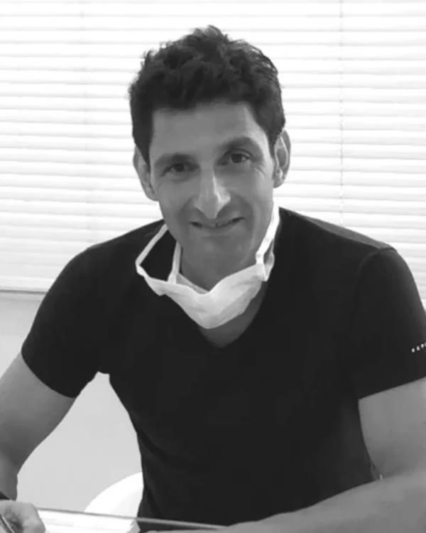

ד״ר דוד סיארי · רופא שיניים מנתח · הרצליה פיתוח
החיוך שלך.
המקצועיות שלנו.
טיפולי שיניים מתקדמים, טכנולוגיה חדשנית וצוות מקצועי שמלווה אותך בדרך לחיוך בריא ובטוח יותר.
- 30 שנות ניסיון
- הכשרה בפריז ובניו יורק
- עברית · Français · English
קשר עם המטופל
היחסים עם המטופלים הם הלב של המרפאה שלנו. כל מי שמגיע אלינו לייעוץ מתקבל בברכה, בתשומת לב ובהתחשבות מלאה.
בכל גיל ובכל מצב, תקבלו את הצעות הטיפול הטובות ביותר עבורכם. המטרה שלנו היא לשפר את איכות החיים של המטופלים שלנו — ולהעניק להם את המיטב למען הבריאות, הנוחות, היופי והביטחון העצמי שלהם.
מה אומרים המטופלים
ביקורות מאומתות-
מטופל/ת מאומת/תWhatClinic · תורגם מאנגלית
ד״ר סיארי רופא שיניים מצוין, ונעים מאוד.
-
מטופל/ת מאומת/תWhatClinic · תורגם מאנגלית
רופא שיניים מדהים — חברותי, נעים ומעל הכול מקצועי. הביקור אצל רופא השיניים הפך לחוויה נעימה.
-
מטופל/ת מאומת/תWhatClinic · תורגם מאנגלית
רופא חברותי, אכפתי ומקצועי מאוד. גורם לך להרגיש בנוח לגמרי — ובאמת כמעט לא מרגישים כאב.
אודות
רפואה מתקדמת. יחס אישי.
ד״ר דוד סיארי, בוגר הפקולטה לרפואת שיניים של אוניברסיטת פריז, התמחה בכירורגיה, בהשתלות ובאסתטיקה דנטלית. מאז 2016 הוא מקבל מטופלים במרפאה שלו בהרצליה פיתוח, בלב ההייטק הישראלי — יחד עם אנזו, מעצב החיוך של המרפאה.
- ניסיון של 30 שנההכשרות אקדמיות ומקצועיות בינלאומיות בכל תחומי רפואת השיניים.
- ציוד דיגיטלי מתקדםסורק Omnicam, מערכת CEREC Sirona ומעבדת שיניים משולבת.
- תוכנית טיפול אישיתנבנית לפי הבקשות שלכם, אחרי בדיקה קלינית ורדיולוגית מדויקת.
- שתלים ושיקום ללא מתכתשתלי Straumann השוויצריים ופרותזות מזירקוניה בהתאמה ביולוגית מלאה.
- רופא אחד לכל הטיפוליםכל הטיפולים ניתנים על ידי אותו רופא, באותה מרפאה, בסטנדרטים גבוהים.
חדש במרפאה · כתר ביום
כתר במפגש אחד ויחיד.
המרפאה כוללת מעבדת שיניים משולבת. במקום טביעות סיליקון, הפה נסרק דיגיטלית ב־Omnicam, והפרותזות מקרמיקה מלאה מיוצרות במרפאה עצמה — ברוב המקרים בפגישה אחת, בטכנולוגיית CEREC Sirona.
- חומרים איכותיים
- ביצוע מהיר
- התאמה מושלמת
- טכנולוגיה חדישה
- 01
סריקת חלל הפה
סריקה תלת־ממדית מהירה ונוחה ב־Omnicam — בלי חומרי טביעה ובלי אי־נוחות.
- 02
תכנון ממוחשב
הכתר מתוכנן על המסך בדיוק מרבי, בהתאמה לשיניים הסמוכות ולנשיכה שלך.
- 03
כרסום במעבדה שלנו
הכתר נחרט מגוש קרמיקה מלאה במעבדה שבתוך המרפאה, ומותאם בגוון ובצורה.
- 04
הדבקה — באותו יום
יוצאים מהמרפאה עם כתר קבוע ואסתטי, ברוב המקרים כבר בסוף אותה פגישה.
סוגי טיפולי שיניים
רפואת שיניים מודרנית — ללא מתכת.
כל הטכניקות של רפואת השיניים המודרנית, תחת קורת גג אחת במרפאה שלנו בהרצליה פיתוח.
השתלות שיניים
שתלי Straumann השוויצריים — מהבטוחים בעולם — וגם שתלים מזירקוניה, ללא מתכת.
כתר ביום אחד
סריקה, תכנון וייצור במעבדת המרפאה — כתר קבוע מקרמיקה מלאה, ברוב המקרים בפגישה אחת.
חזיתות חרסינה
ציפויים דקים בעיצוב אישי שמשנים צורה, גוון ופרופורציות של החיוך.
כתרים וגשרים מזירקוניה
כתרים, גשרים, אינליי ואונליי — ללא מתכת, בתכנון ממוחשב ובהתאמה ביולוגית מלאה.
הלבנת שיניים
הלבנה מקצועית ובטוחה להחזרת הברק הטבעי של השיניים.
טיפולי חניכיים
טיפולים וניתוחי חניכיים, והשתלות חניכיים לשיקום ולאסתטיקה.
כירורגיה דנטלית
השתלת עצם, הרמת סינוס ועקירת שיני בינה כלואות — בידיים מנוסות.
רפואה אסתטית
בוטוקס, PRF / PRP, חומצה היאלורונית וחוטי מתיחה — להשלמת החיוך והפנים.
לפני ואחרי
תוצאות שמדברות בעד עצמן.
המחויבויות שלנו · קשר של אמון לפני הכל
ארבעה צעדים לחיוך חדש.
- 01
קובעים תור
בטלפון 052-532-6620, בוואטסאפ או בטופס באתר — בעברית, בצרפתית או באנגלית.
- 02
פגישת ייעוץ
הקשבה לבקשות שלכם, בדיקה קלינית ורדיולוגית זהירה וסריקה דיגיטלית.
- 03
בניית תוכנית טיפול
מטיפול פשוט ועד שיקום מלא — דיון פתוח בכל הפתרונות האפשריים, בסדר טיפולים הגיוני שמכבד את רקמות הפה.
- 04
מתחילים לחייך
כל הטיפולים ניתנים על ידי אותו רופא, באותה מרפאה, בסטנדרטים גבוהים מאוד.
הצוות
שלום, שמי דוד סיארי.

רופא שיניים מנתח · מייסד DENTECH CARES
סיימתי את לימודי רפואת השיניים באוניברסיטת פריז בשנת 1993, וכיוונתי את ההכשרה שלי לתארים מתקדמים בכירורגיה, בהשתלות ובאסתטיקה דנטלית:
- 1997 — תואר אקדמי בכירורגיה ובהשתלת שיניים, בית החולים קוצ׳ין בפריז (Hôpital Cochin de Paris)
- 2000 — לימודי פריודונטיה והשתלת שיניים, אוניברסיטת ניו יורק (New York University)
- 2003 — דיפלומה ישראלית של רופא שיניים מנתח
- 1997–2015 — הוראת השתלת שיניים במחלקות לכירורגיה של הפה והלסת בבתי החולים קוצ׳ין וסנט ג׳וזף בפריז, ובמקביל פרקטיקה פרטית בפריז מאז 1994
- מאז 2020 — הכשרה ברפואה אסתטית: בוטוקס, PRF / PRP, חומצה היאלורונית וחוטי מתיחה
יחד עם אנזו, מעצב החיוך הצעיר והמוכשר שלי, פתחנו בתחילת 2016 את המרפאה בהרצליה פיתוח, בלב ההייטק הישראלי — כדי להציע לכם את המיטב של רפואת השיניים המודרנית.
אנזו
מעצב החיוך של המרפאה
אחראי על התכנון האסתטי של החיוך ועל הפרותזות שמיוצרות במעבדה הדיגיטלית של המרפאה.
שאלות נפוצות
יש לך שאלה? יש לנו תשובה.
לא מצאת את מה שחיפשת? נשמח לענות בטלפון או בוואטסאפ — בעברית, בצרפתית או באנגלית.
כמה עולה טיפול שיניים?
המחיר תלוי בסוג הטיפול ובמצב הפה. אחרי פגישת הייעוץ והבדיקה תקבלו תוכנית טיפול מפורטת עם עלות לכל שלב, כך שתדעו בדיוק למה לצפות.
האם הטיפול כואב?
הטיפולים מתבצעים בהרדמה מקומית ובגישה עדינה שמכבדת את רקמות הפה. הסריקה הדיגיטלית מחליפה את טביעות הסיליקון הלא נעימות, וכל שלב מוסבר מראש.
כמה זמן לוקח טיפול השתלה?
הניתוח עצמו קצר יחסית. לאחריו יש תקופת התאחות של השתל בעצם, שמשכה משתנה ממטופל למטופל, ובסופה מתקינים את הכתר הקבוע. לוח הזמנים המדויק נקבע בתוכנית הטיפול האישית שלכם.
מה זה "כתר ביום אחד"?
בזכות סורק Omnicam ומערכת CEREC Sirona, הכתר נסרק, מתוכנן ומיוצר מקרמיקה מלאה במעבדה שבתוך המרפאה — וברוב המקרים מודבק כבר בסוף אותה פגישה.
האם ניתן לקבל תוכנית טיפול אישית?
בהחלט — כך אנחנו עובדים תמיד. תוכנית הטיפול, מטיפול פשוט ועד שיקום מלא, נבנית לאחר התחשבות בבקשות שלכם, בדיקה קלינית ורדיולוגית מדויקת ודיון בכל הפתרונות האפשריים.
האם קיימת אפשרות למימון?
אפשרויות התשלום נקבעות לפי תוכנית הטיפול. נשמח לפרט עליהן בפגישת הייעוץ או בשיחת טלפון.
איך קובעים תור?
השאירו פרטים בטופס למטה, שלחו הודעה בוואטסאפ או התקשרו ל־052-532-6620. מדברים איתכם בעברית, בצרפתית ובאנגלית.
צור קשר
הגיע הזמן לחייך בביטחון.
השאירו פרטים ונציג מהמרפאה יחזור אליכם לתיאום ייעוץ.
איך להגיע אלינו
משכית 22, בית לומיר — כניסה צפונית, קומה 2הרצליה פיתוח
- חנייהמול הבניין
- רכבת10 דקות הליכה מתחנת הרצליה
- אוטובוסים11 · 12 · 13 · 14 · 27 · 29 · 30 · 39 · 90
- חוזרים אליכם בהקדם
- עברית · Français · English
- הפרטים שלכם נשמרים בסודיות